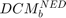
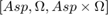
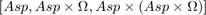
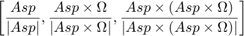

Lista 01 - Parte 1a
Autor: Francisco Castro
Contents
Nesta parte fazem-se as análises referentes aos dados presentes no arquivo dados.dat
Preparação do ambiente
close all
format
clear
clc
Implementação da estrutura para o método TRIAD
A expressão para a  utilizando o método TRIAD pode ser encontrada considerando inputs genéricos dos acelerômetros e girômetros e montando os vetores em cada uma das bases no referencial do corpo e do NED que se correspondam para posterior associação e determinação da respectiva DCM.
Portanto, temos
syms a_x a_y a_z w_x w_y w_z Asp_b = [a_x ; a_y ; a_z]; Omega_b = [w_x; w_y; w_z]; syms g Omega lambda Asp_NED = [0;0;-g]; Omega_NED = [Omega*cos(lambda); 0 ; -Omega*sin(lambda)];
Onde a base 1

que é uma base não ortonormal, pode ser definida da seguinte forma
A = [Asp_NED, Omega_NED, cross(Asp_NED,Omega_NED)]; B = [Asp_b, Omega_b, cross(Asp_b,Omega_b)]; D_NED_B_1 = B*inv(A);
Analogamente, temos a base 2

que é uma base ortogonal, mas não normalizada, descrita por
A = [Asp_NED, cross(Asp_NED,Omega_NED), cross(Asp_NED,cross(Asp_NED,Omega_NED))]; B = [Asp_b, cross(Asp_b,Omega_b), cross(Asp_b,cross(Asp_b,Omega_b))]; D_NED_B_2 = B*inv(A);
Ao passo que a base 3 fica

que é, finalmente, uma base ortonormalizada.
A = [... Asp_NED/norm(Asp_NED), ... cross(Asp_NED,Omega_NED)/norm(cross(Asp_NED,Omega_NED)), ... cross(Asp_NED,cross(Asp_NED,Omega_NED))/norm(cross(Asp_NED,cross(Asp_NED,Omega_NED)))... ]; B = [... Asp_b/norm(Asp_b), ... cross(Asp_b,Omega_b)/norm(cross(Asp_b,Omega_b)), ... cross(Asp_b,cross(Asp_b,Omega_b))/norm(cross(Asp_b,cross(Asp_b,Omega_b)))... ]; D_NED_B_3 = B*inv(A);
Ao final dessa estruturação, temos as expressões simbólicas para a DCM NED -> B para as 3 bases propostas que poderão ser calculadas ao final do modelamento.
Coordenadas iniciais
Para as análises a serem feitas com os dados provenientes dos sensores instalados na montanha russa Montezum, serão consideradas as seguintes coordenadas
lambda = -(23 + 05/60 + 54.04/3600)*pi/180; % Latitude (rad) delta = -(47 + 00/60 + 41.55/3600)*pi/180; % Longitude (rad) h = 774.6707; % Altitude (m)
Carregamento os dados
Podemos, portanto, começar a mexer diretamente com os dados, aplicando-os nas expressões achadas para a DCM.
load('Montezum/dados.dat');
Tal que a frequência de aquisição de dados expressada pelas instruções são tais que
f = 100; % Hz (frequência de amostragem) h = 1/f; % s (intervalo de tempo entre medidas)
Tratamento dos dados
Tendo os dados, podemos finalmente discriminá-los quanto ao seu significado. Lembrando que os dados deste primeiro arquivo dados.dat apresentam medidas incrementais. Portanto, necessitou-se dividir pelo tempo entre amostragens h para se obter a real grandeza a ser utilizada nas expressões obtidas.
id = dados(:,1); t = id.*h; % Tempo (s) w_b = dados(:,2:4)./h; % Velocidade angular do corpo (rad/s) Asp_b = dados(:,5:7)./h; % Força específica do corpo (m/s2)
Condições iniciais
Pegando a média das medidas dos 6 primeiros minutos (id <= 36000), temos os seguintes valores para a deteminação da DCM na condição inicial.
Temos que é possível fazer uma estimativa das grandezas de interesse em respeito ao NED a partir da norma da média estacionária dos valores de força específica e velocidade angular do corpo, dado que a sua correspondência é explícita com a norma das mesmas grandezas no NED.
g = norm(mean(Asp_b(1:36000,:))); Omega = norm(mean(w_b(1:36000,:)));
Independentemente das estimativas acima, temos que as medidas a serem consideradas para velocidade angular e força específica do corpo medidas pelos sensores no que diz respeito à determinação da estimativa inicial da matriz DCM são, respectivamente
w_x = mean(w_b(1:36000,1)); w_y = mean(w_b(1:36000,2)); w_z = mean(w_b(1:36000,3)); a_x = mean(Asp_b(1:36000,1)); a_y = mean(Asp_b(1:36000,2)); a_z = mean(Asp_b(1:36000,3));
É importante ressaltar que, para um ruído branco, a média temporal dos 6 primeiros minutos tende a reduzir a influência do mesmo, nos dando uma medida mais limpa para cada uma das grandezas que nos possibilita uma melhor determinação da matriz de mudança de base que estamos interessados.
Resultados
Dado todo o modelamento e tratamento realizados, temos, finalmente, como explicitar os valores atribuídos para a velocidade angular e a força específica do corpo nas matrizes DCM para cada uma das bases. Observe que os valores atribuídos para as grandezas do corpo (assim como as do NED) são os mesmos para todas as bases, ou seja, a_x, a_y, a_z, w_x, w_y e w_z são invariantes (portanto, as estimativas para g e Omega também o são), o que muda é a formulação dos vetores da base utilizada.
Com isso, temos que os resultados para a DCM inicial (D0), quaternion associado (q0) e ângulos de Euler correspondentes, considerando rotações 321 (os ângulos estão na ordem [yaw, pitch, roll] e são dados em radianos) são, para cada base.
Base 1
D0_NED_B_base1 = double(subs(D_NED_B_1)) q0_base1 = DCMtoQuaternion(D0_NED_B_base1) euler0_base1 = quatToEuler(q0_base1)
D0_NED_B_base1 =
-0.3340 0.9458 0.0013
-0.9458 -0.3339 0.0020
-0.0048 -0.0006 1.0000
q0_base1 =
0.5771
0.0011
-0.0027
0.8195
euler0_base1 =
1.9187
-0.0049
-0.0031
Base 2
D0_NED_B_base2 = double(subs(D_NED_B_2)) q0_base2 = DCMtoQuaternion(D0_NED_B_base2) euler0_base2 = quatToEuler(q0_base2)
D0_NED_B_base2 =
-0.3339 0.9458 0.0013
-0.9458 -0.3339 0.0020
0.0023 -0.0006 1.0000
q0_base2 =
0.5771
0.0011
0.0004
0.8195
euler0_base2 =
1.9187
-0.0013
0.0020
Base 3
D0_NED_B_base3 = double(subs(D_NED_B_3)) q0_base3 = DCMtoQuaternion(D0_NED_B_base3) euler0_base3 = quatToEuler(q0_base3)
D0_NED_B_base3 =
-0.3329 0.9429 0.0013
-0.9429 -0.3329 0.0020
0.0023 -0.0006 1.0000
q0_base3 =
0.5775
0.0011
0.0004
0.8164
euler0_base3 =
1.9102
-0.0013
0.0020
Verificação de resultados
A seguir são feitas algumas análises, verificações e avaliações quanto à ortonormalidade das estimativas de D0 e a normalidade das estimativas dos respectivos quaternions.
Ortonormalidade das DCMs
Temos que a ortonormalidade das estimativas de DCM iniciais podem ser avaliadas através (i) do cálculo do seu determinante (que deveria ser 1 para o caso de matrizes ortonormais) e (ii) a sua semelhança da sua matriz inversa com a a sua conjugada (definição de matriz ortonormal).
Primeiramente, temos que os determinantes das DCM obtidas são
determinantes = [det(D0_NED_B_base1), det(D0_NED_B_base2), det(D0_NED_B_base3)]
determinantes =
1.0060 1.0060 1.0000
O que nos dá um primeiro indício (i) de que o processo de ortonormalização proposto pela redefinição das bases consideradas realmente tem efeito e apresenta uma resposta, que pode ser mais ou menos desejada, ao custo computacional adicional empregado. Ademais, como é de se esperar, a matriz que não possui determinante unitário não pode ser ortonormal e temos que, explicitamente, a que possui é (basta comparar inversa com transposta).
Normalidade
Quanto à normalidade dos quaternions, temos que as normas avaliadas para cada base são
normasQuat = [norm(q0_base1), norm(q0_base2), norm(q0_base3)]
normasQuat =
1.0023 1.0023 1.0000
Que nos confere um resultado análogo ao anterior: apenas a última é um quaternion de rotação, logo, há um preço a ser pago por se utilizar cada um dos dois primeiros como um quaternion de rotação para se fazer os cálculos. Tal preço pode ser contabilizado de algumas formas, como por exemplo, pela norma da diferença entre o quaternion e o quaternion de rotação mais próximo obtido por um processo de normalização iterativa. Esta análise será afeita adiante.
Análises de normalização e ortonormalização iterativa
Em seguida mostra-se os resultados para o método de ortonormalização iterativo para obter a matriz ortonormal mais próxima das estimativas da DCM computadas pelo TRIAD, bem como os resultaados análogos para o método de normalização iterativo para obter o quaternion de rotação mais próximo da estimativa computada via TRIAD.
Ortonormalização iterativa
Temos que as matrizes ortonormais mais próximas às obtidas apresentam, conforme esperado, as propriedades de uma matriz ortonormal. Mas analisar-se-á o seu desalinhamento com relação à DCM que a originou para tentar metrificar a magnitude do erro na orientação resultante do uso de uma em detrimento da outra. Dessa forma, temos
D0_base1_orto = ortonormalizacaoIterativo(D0_NED_B_base1); D0_base2_orto = ortonormalizacaoIterativo(D0_NED_B_base2); D0_base3_orto = ortonormalizacaoIterativo(D0_NED_B_base3); format shortg; desalinhamentoOrtoIt = [... desalinhamento(D0_base1_orto, D0_NED_B_base1),... desalinhamento(D0_base2_orto, D0_NED_B_base2),... desalinhamento(D0_base3_orto, D0_NED_B_base3) ... ]
desalinhamentoOrtoIt = 4.0118e-17 2.7762e-17 0
Onde vê-se que a normalização iterativa causa diferenciação similar (da mesma ordem de grandeza) quanto a matriz original independentemente se a base utilizada é ortogonal (base 2) ou não (base 2). Tal métrica não nos permite invalidar qualquer uma das 3 possibilidades, mas nos dá indícios de que a ortonormalização iterativa não nos dá tanto ganho a mais de precisão mesmo utilizando uma base que necessita de maior poder computacional.
Normalização iterativa
Quanto ao tratamento dos quaternions, optou-se por normalizar os resultados para estimativa de quaternion inicial em cada caso e comparar, adotando como métrica o desalinhamento do novo quaternion de rotação obtido com o quaternion original. Com isso, teremos uma comparação análoga à feita acima e poderemos avaliar, a grosso modo, os benefícios de uma em relação às outras quanto aos quaternions gerados.
q_rot1 = normalizacaoIterativa(q0_base1); q_rot2 = normalizacaoIterativa(q0_base2); q_rot3 = normalizacaoIterativa(q0_base3); desalinhamentoNormIt = [... desalinhamento(quatToDCM(q_rot1), D0_NED_B_base1),... % Calcula o desalinhamento desalinhamento(quatToDCM(q_rot2), D0_NED_B_base2),... % Calcula o desalinhamento desalinhamento(quatToDCM(q_rot3), D0_NED_B_base3) ... % Calcula o desalinhamento ]
desalinhamentoNormIt =
0.0066161 0.0042625 1.3878e-16
Que nos dá um resultado análogo ao anterior: há pouco ganho, em termos de diferença do resultado original (medida da discrepância) por se usar uma base computacionalmente mais custosa de se calcular. Curiosamente a variação de orientação (desalinhamento com relação ao uso da DCM proveniente do quaternion de rotação mais próximo ao invés da DCM original) que ter-se-á por normalizar iterativamente o quaternion é praticamente a mesma, considerando a métrica adotada, para a base 1 e 2.
Outra análise que pode ser feita é o desalinhamento cruzado entre os resultados para cada base comparativa aos resultados originais da base 3, que pode ser considerada como a melhor estimativa a ser utilizada para os cálculos necessários. Nesse sentido, temos que
desalinhamentoCruzado = [... % Linha 1: comparação estimativas originais com a base 3 desalinhamento(D0_NED_B_base1, D0_NED_B_base3),... desalinhamento(D0_NED_B_base2, D0_NED_B_base3),... desalinhamento(D0_NED_B_base3, D0_NED_B_base3);... % Linha 2: comparação matriz ortonormal mais próxima com a base 3 desalinhamento(D0_base1_orto, D0_NED_B_base3),... desalinhamento(D0_base2_orto, D0_NED_B_base3),... desalinhamento(D0_base3_orto, D0_NED_B_base3);... % Linha 3: comparação DCM do quaternion de rotação mais próximo c/ a base 3 desalinhamento(quatToDCM(q_rot1), D0_NED_B_base3),... desalinhamento(quatToDCM(q_rot2), D0_NED_B_base3),... desalinhamento(quatToDCM(q_rot3), D0_NED_B_base3)... ]
desalinhamentoCruzado =
0.0035648 2.7757e-17 0
0.0035595 2.7758e-17 0
0.0074902 0.0042497 1.3878e-16
Que nos fornece uma análise mais interessante: os processos de ortonormalização iterativa das DCMs resultantes da base 1 e 2 nos dá praticamente o que obteríamos fazendo os cálculos e considerando os resultados originais para a base 3. Ou seja, basta, nesse sentido, avaliar qual dessas alternativas possui menor custo computacional e, à grosso modo, a precisão das duas será semelhante se usada álgebra matricial (DCMs). Caso opte-se por usar álgebra de quaternions, que é menos custosa, há ganho, mas não tanto comparativamente aos resultados da normalização iterativa da base 1.